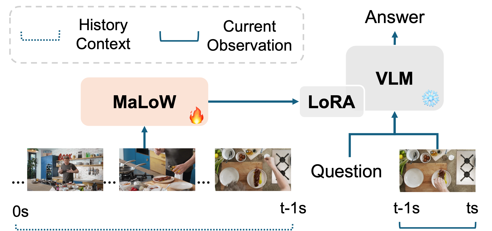
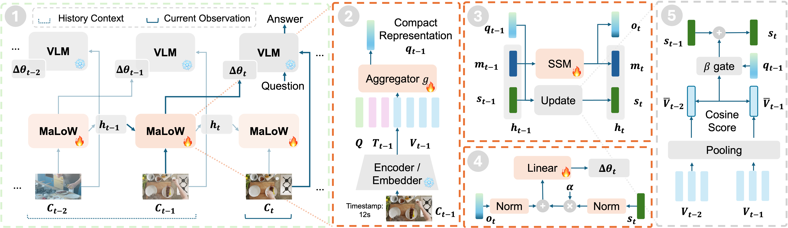
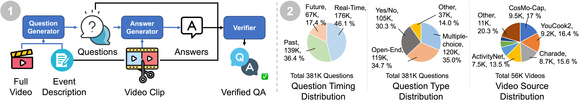
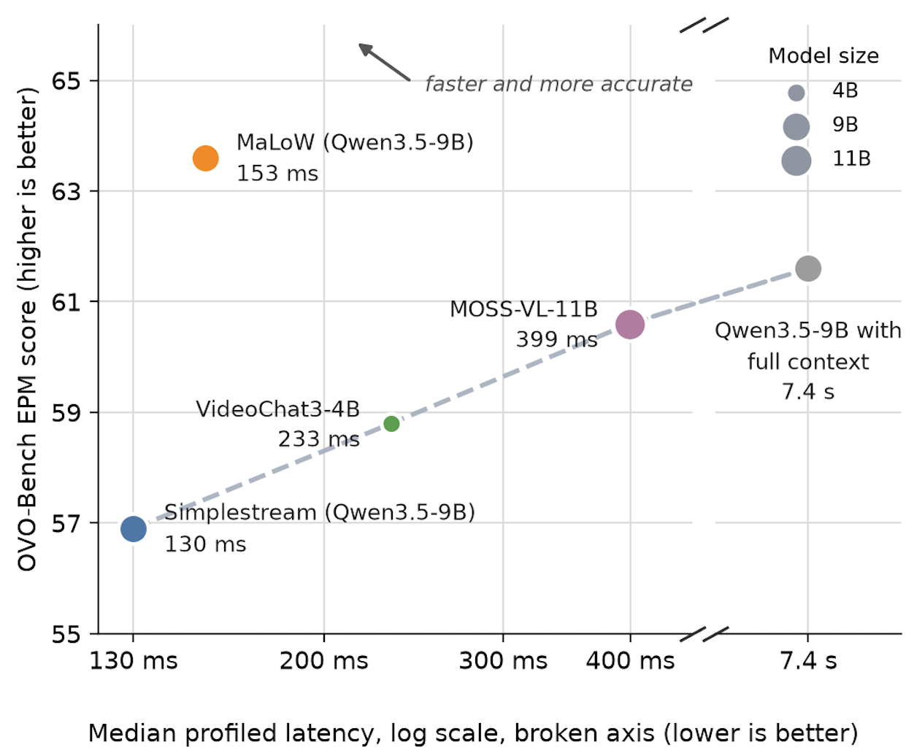

MaLoW · Memory as LoRA Weights
Memory as Weights: Internalizing Long-Term History for Streaming Videos

Introduction
Streaming vision-language models must remember what happened earlier, understand what is happening now, and respond as new observations arrive. Storing historical observations in the input context makes the past and the present compete for a limited context window.
MaLoW takes a different approach: history as weights, current observation as input. A recurrent hypernetwork incrementally consolidates earlier observations into lightweight LoRA updates. The adapted model receives the current observation and user query, while its evolving weights carry information from the past.
On the backward split of OVO-Bench, MaLoW outperforms prior memory approaches by 3.9%-11.8% across different video backbones while incurring only modest latency overhead. Across base VLMs ranging from 0.8B to 11B parameters, MaLoW yields consistent performance gains. Beyond streaming video understanding, MaLoW also generalizes to vision-language-action models, improving the action success rate on Simpler WidowX by 9.4 percentage points.
Problem
An expanding history competes with current observations for limited model input context.
Core Idea
Internalize history into evolving, fixed-size LoRA weights through a recurrent hypernetwork.
Scope
Streaming video setting includes streaming video understanding, interactive AI assistants and robotic planning.
Method Overview
MaLoW converts incoming experience into a compact memory state and then into parameter updates for the next interaction.

1. Context Encoding
Encode visual observations and textual context, then compress them using learned queries.
2. Recurrent Memory
Combine a state-space model for temporal dynamics with gated accumulation of global semantic information.
3. LoRA Generation
Decode memory into lightweight LoRA weights. Use the adapted model to answer the current query or predict an action.
MaLoW-Instruct
MaLoW-Instruct adapts public offline video datasets to streaming video understanding, with 381K question-answer pairs over 56K videos from 14 datasets. Its timestamped questions teach models to recall past events, understand ongoing activity, and anticipate future events from the evidence already observed.

The pipeline retains only QA pairs that pass verification and filters videos overlapping with OVO-Bench. Questions include open-ended, multiple-choice, and yes/no formats. Approximately 36% of queries occur after the target event has ended, directly supervising historical recall, while many real-time questions also require evidence outside the current observation window further encouraging the model to leverage historical context through MaLoW.
Performance
MaLoW achieves state-of-the-art results.
MaLoW improves both StreamingBench real-time accuracy and overall OVO-Bench accuracy over each corresponding base model. Among the compared methods, MaLoW (Qwen3-VL-4B) achieves the highest StreamingBench real-time accuracy at 84.8%, while MaLoW (MOSS-VL-Real-11B) achieves the highest overall OVO-Bench accuracy at 74.5%.
MaLoW (Qwen3.5-9B) also achieves the highest episodic memory accuracy at 63.6%, highlighting its ability to retain evidence from earlier observations.
MaLoW is particularly effective on memory-critical tasks while retaining competitive performance on real-time perception. Importantly, the gains are consistent across model scales from 4B to 11B and across base VLMs pre-trained for both offline video understanding (Qwen series) and streaming video understanding (VideoChat3 and MOSS-VL-Realtime).
MaLoW offers a lightweight memory patch.
Across different base VLMs, MaLoW introduces only 1.4%-4.0% additional parameters. The pretrained backbone architecture and parameters remain unchanged, while historical information is encoded entirely through the evolving LoRA weights. Preserving the backbone helps retain its pretrained capabilities and minimizes interference with real-time perception. Moreover, widespread LoRA support in modern inference frameworks facilitates efficient deployment.
| Model | Frames / sampling | StreamingBench (R) | OVO-Bench | |||||||||||
|---|---|---|---|---|---|---|---|---|---|---|---|---|---|---|
| Real-Time Visual Perception | Backward Tracing | Avg. | ||||||||||||
| OCR | ACR | ATR | STU | FPD | OJR | Avg. | EPM | ASI | HLD | Avg. | ||||
| Offline Video LLMs | ||||||||||||||
| Qwen3-VL-4B | 1 fps | 78.4 | 85.2 | 60.6 | 74.1 | 51.1 | 76.2 | 67.9 | 69.2 | 57.9 | 61.5 | 16.7 | 45.4 | 57.3 |
| Qwen3.5-9B | 1 fps | 81.9 | 83.9 | 62.4 | 70.7 | 46.1 | 76.2 | 70.6 | 68.3 | 61.6 | 62.8 | 59.1 | 61.2 | 64.8 |
| Streaming Video LLMs with full context | ||||||||||||||
| VideoChat3-4B | 2-4 fps* | 79.0 (83.0) | 92.6 | 78.0 | 77.6 | 59.0 | 74.3 | 71.7 | 75.5 | 58.8 | 58.6 | 46.8 | 54.7 | 65.1 |
| MOSS-VL-Real-11B | 1 fps | 80.6 (82.9) | 86.6 | 70.6 | 84.8 | 64.6 | 71.2 | 73.9 | 75.2 | 60.6 | 64.5 | 92.4 | 72.5 | 73.8 |
| Streaming Video LLMs with Local Context Window | ||||||||||||||
| Simplestream-8B | 4 (1 fps) | 78.3 | 89.3 | 77.1 | 83.6 | 68.5 | 76.2 | 81.0 | 79.3 | 49.5 | 56.1 | 54.8 | 53.5 | 66.4 |
| AURA-8B | 30 (1 fps) | 83.2 | 89.9 | 79.8 | 80.2 | 70.2 | 77.2 | 81.5 | 79.8 | 54.9 | 67.6 | 58.6 | 60.4 | 70.1 |
| Streaming Video LLMs with Local Context Window and Memory Mechanism | ||||||||||||||
| OASIS-8B | 2 fps | 78.2 | 92.0 | 80.7 | 81.0 | 67.4 | 67.3 | 79.9 | 78.1 | 62.0 | 60.1 | 47.3 | 57.2 | 67.7 |
| StreamTTT-4B | 2 fps | 81.3 | 91.3 | 80.7 | 80.2 | 56.2 | 82.2 | 77.7 | 78.1 | 60.9 | 58.1 | 60.8 | 59.9 | 69.0 |
| Ours | ||||||||||||||
| MaLoW (VideoChat3-4B)197.6M trainable (4.0%) | 1 fps | 81.2 | 89.9 | 70.6 | 80.2 | 60.7 | 76.2 | 75.3 | 75.5 | 60.2 | 58.1 | 54.8 | 57.7 | 66.6 |
| MaLoW (Qwen3-VL-4B)197.6M trainable (3.9%) | 1 fps | 84.8 | 90.6 | 69.7 | 75.0 | 64.0 | 74.3 | 74.5 | 74.7 | 62.0 | 67.6 | 61.8 | 63.8 | 69.3 |
| MaLoW (Qwen3.5-9B)308.9M trainable (3.0%) | 1 fps | 82.3 | 87.9 | 66.1 | 81.0 | 60.1 | 84.2 | 77.7 | 76.2 | 63.6 | 66.2 | 69.4 | 66.4 | 71.3 |
| MaLoW (MOSS-VL-Real-11B)321.1M trainable (1.4%) | 1 fps | 81.0 | 91.9 | 74.3 | 85.3 | 62.9 | 73.3 | 76.6 | 77.4 | 62.0 | 62.8 | 90.3 | 71.7 | 74.5 |
The results shown in Accuracy (%). StreamingBench (R) measures real-time understanding. The OVO-Bench columns cover real-time perception and backward tracing. Scroll horizontally to view all tasks. *VideoChat3 uses 2 fps on OVO-Bench and 4 fps on StreamingBench.
1. Gray numbers denote results reported in the original paper that differ from our re-evaluation using the official implementation and reported evaluation hyperparameters. Please refer to `Baselines Re-evaluation` in sec C.1 of the paper for more information.
2. Matching row colors pair base models with their MaLoW instantiations: green for Qwen, blue for VideoChat3, and yellow for MOSS.
3. MaLoW (Qwen3-VL-4B) use the most recent 8-second clips as the current observations, while the other MaLoW instantiations use the most recent 2 seconds.
For more information please refer to the Table 1 in the paper.
MaLoW generalizes across model scales and families.
Across all four Gemma4 and Qwen3.5 backbones, MaLoW improves average accuracy on both benchmarks over the corresponding full-context and local-window baselines. On OVO-Bench backward tracing, it improves over local-window baselines by 7.7–23.9 percentage points, while also improving real-time accuracy over full-context baselines on both benchmarks. These results show that MaLoW preserves historical information while maintaining strong understanding of current observations.
| Method | OVO-Bench | StreamingBench | |||||||
|---|---|---|---|---|---|---|---|---|---|
| Backward | Real-time | Forward | Avg. | Real-time | Omni | Proactive | SQA | Avg. | |
| Base model with 1 fps, full-context baseline | |||||||||
| Gemma4-E4B | 56.8 | 63.1 | 37.9 | 52.6 | 68.6 | 37.0 | 24.4 | 50.0 | 54.6 |
| Qwen3.5-0.8B | 34.2 | 60.8 | 48.0 | 47.7 | 69.1 | 32.1 | 22.4 | 39.6 | 52.5 |
| Qwen3.5-2B | 44.6 | 62.5 | 46.3 | 51.2 | 75.1 | 38.1 | 6.4 | 42.8 | 57.2 |
| Qwen3.5-4B | 60.1 | 66.9 | 51.2 | 59.4 | 80.4 | 40.7 | 54.8 | 46.0 | 63.8 |
| Base model with the last 2 frames from the last 2 seconds, local-window baseline | |||||||||
| Gemma4-E4B | 54.9 | 65.7 | 39.6 | 53.4 | 67.1 | 51.1 | 20.4 | 46.8 | 58.1 |
| Qwen3.5-0.8B | 32.3 | 69.9 | 45.1 | 49.1 | 70.1 | 53.5 | 18.8 | 48.0 | 60.5 |
| Qwen3.5-2B | 39.2 | 72.8 | 45.1 | 52.4 | 76.7 | 54.2 | 5.2 | 56.8 | 64.1 |
| Qwen3.5-4B | 50.6 | 75.1 | 39.3 | 55.1 | 79.4 | 60.9 | 45.6 | 52.8 | 69.8 |
| MaLoW models with 1 fps, maximum 768 frames | |||||||||
| MaLoW (Gemma4-E4B)190.4M trainable (1.2%) | 62.6 | 64.8 | 47.8 | 58.4 | 74.6 | 44.8 | 40.0 | 46.0 | 61.1 |
| MaLoW (Qwen3.5-0.8B)115.5M trainable (10.8%) | 54.7 | 67.7 | 48.7 | 57.0 | 76.7 | 48.9 | 26.0 | 48.4 | 63.0 |
| MaLoW (Qwen3.5-2B)170.7M trainable (6.3%) | 63.1 | 70.1 | 49.3 | 60.9 | 80.3 | 54.3 | 54.4 | 55.6 | 68.8 |
| MaLoW (Qwen3.5-4B)235.0M trainable (4.6%) | 62.5 | 74.7 | 49.3 | 62.2 | 82.3 | 63.7 | 68.0 | 50.0 | 73.5 |
The results shown in Accuracy (%). We build MaLoW across Gemma4 and Qwen3.5 models, comparing full-context baselines, local-window baselines, and MaLoW.
Scroll horizontally to compare both benchmarks. Green cells compare real-time perception with full-context baselines; blue cells compare memory performance with local-window baselines.
Trainable parameter counts and percentages are shown beneath each MaLoW model.
Extension to Vision-Language-Action (VLA) Models.
MaLoW raises the average task success rate from 59.4% to 68.8%, a gain of 9.4 percentage points. Success rates improve on three of the four tasks, with the largest gain on putting the spoon on the towel (70.8% → 87.5%), while carrot placement remains at 75.0%. These results demonstrate the benefit of incorporating historical observations and action trajectories into action prediction.
| Policy | Stack green block on yellow block | Put carrot on plate | Put spoon on towel | Put eggplant in yellow basket | Overall |
|---|---|---|---|---|---|
| Qwen3.5-2B-MLP baseline | 20.8 | 75.0 | 70.8 | 70.8 | 59.4 |
| MaLoW (Qwen3.5-2B-MLP) | 29.2 | 75.0 | 87.5 | 83.3 | 68.8 |
VLA results on SimplerEnv-Bridge with WidowX Robot. For each task we run 24 episodes.
Inference Overhead
We profile the streaming inference latency of MaLoW and four baselines on subset of OVO-Bench. At each query timestamp, we measure the time required to process the current observation, prefill the KV-cache, and decoding. For MaLoW, this also includes the time to generate and apply the LoRA weights.
MaLoW achieves a favorable trade-off between inference latency and performance on memory-critical tasks. The additional latency introduced by our memory mechanism is only around 23 ms, accounting for less than 15% of the total inference time. Moreover, LoRA generation can be parallelized with backbone inference, providing further opportunities to reduce the runtime overhead.

Qualitative Results
Streaming video examples show how MaLoW recalls earlier evidence and combines it with the current observation. Choose a sample, then press 'Play video'. Use fullscreen to inspect the annotations.
SA-01 — Remembering an earlier advertisement
This later mall view no longer shows the earlier celebrity display.
Open original videoResources
Paper
Memory as Weights: Internalizing Long-Term History for Streaming Videos.
Hugging Face
Browse all six checkpoints here.
The corresponding Qwen3.5 or Qwen3-VL base model is also required.
What To Add Next
Evaluation code and model checkpoints are available now. The following releases are planned.
Training Code
Code for training MaLoW memory modules will be released in the project repository.
Training Data
MaLoW-Instruct streaming video training data will be released.
Citation
@misc{liu2026memoryweightsinternalizinglongterm,
title={Memory as Weights: Internalizing Long-Term History for Streaming Videos},
author={Zhuoming Liu and Jinhong Lin and Lin Zhang and Yiwu Zhong and Yin Li},
year={2026},
eprint={2610.22070},
archivePrefix={arXiv},
primaryClass={cs.CV},
url={https://arxiv.org/abs/2610.22070},
}